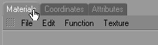
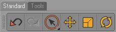
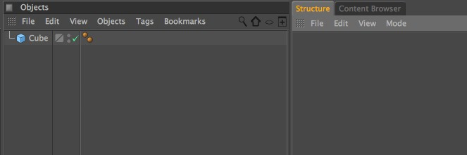

Function available in CINEMA 4D Prime, Visualize, Broadcast, Studio & BodyPaint 3D
标签
创建标签
任何窗口或命令面板都可以显示为水平或垂直的标签。
在窗口的抓手图标上点击或在一个命令面板上点击右键，然后选择转为标签选项。
群组标签
提示：
当你拖动一个抓手图标到另一个抓手图标时，它们两个都会变成标签，即使目标不是一个标签。
当你拖动一个抓手图标到另一个抓手图标时，它们两个都会变成标签，即使目标不是一个标签。
要把标签从一个群组移动到另一个群组，拖动标签的抓手图标到目标群组的一个标签或抓手图标上，鼠标会变成一个手形表示标签将要插入的位置。
当鼠标变成手形时则可以插入到群组中。
图标面板可以创建不错的标签。
如果把标签拖放到一个抓手图标上，它会插入到抓手图标标签的后面。如果把标签拖放到另一个标签，当你在标签的左半部分释放鼠标时，它会插入到目标标签的前面，否则它会插入到后面。你也可以把图标面板作为标签使用。
如果把鼠标放置在一个标签组上，你可以使用鼠标滚轮在标签之间滚动。
把标签转换为窗口
要把标签显示的窗口转换为一个自由放置的窗口，只需要把标签的抓手图标拖放到窗口左侧然后释放鼠标。
 此图正在解锁对象管理器。
此图正在解锁对象管理器。解锁的对象管理器。